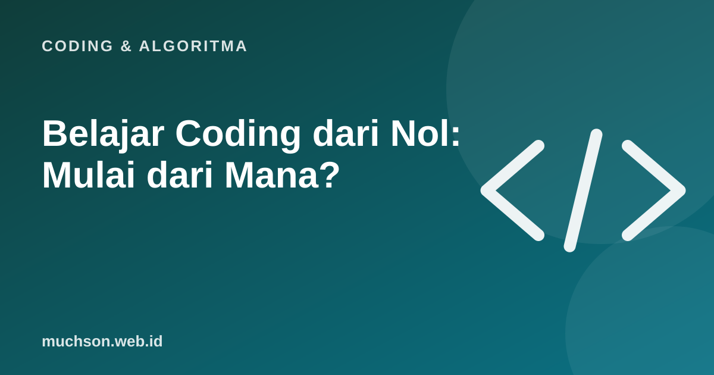

Beranda › Artikel › Coding & Algoritma
Coding & AlgoritmaBelajar Coding dari Nol: Mulai dari Mana?
Setiap tahun banyak orang memutuskan belajar coding, lalu berhenti setelah dua minggu. Penyebabnya jarang karena "tidak berbakat". Biasanya karena tujuan yang tidak jelas, materi yang melompat-lompat, dan terlalu banyak menonton tanpa membuat. Panduan ini memberi jalur yang lebih realistis.

Langkah 0: tentukan tujuan
"Belajar coding" terlalu luas. Tujuan yang jelas menentukan bahasa, materi, dan proyek pertama Anda.
Fondasi yang sama untuk semua jalur
Apa pun bahasanya, konsep inti pemrograman sama. Kuasai ini dengan baik dan bahasa kedua akan jauh lebih mudah:
Jadwal realistis
| Minggu | Fokus | Hasil |
|---|---|---|
| 1-2 | Variabel, input-output, kondisi | Program kalkulator sederhana |
| 3-4 | Perulangan dan fungsi | Game tebak angka |
| 5-6 | List, dictionary, berkas | Pencatat pengeluaran |
| 7-8 | Dasar jalur pilihan (web atau data) | Proyek kecil pertama |
| 9-12 | Proyek yang lebih besar + Git | Proyek portofolio pertama di GitHub |
Kesalahan yang membuat pemula berhenti
Di era AI, kemampuan membaca, memahami, dan memeriksa kode justru makin penting. AI bisa membantu menulis, tetapi Anda yang harus tahu apakah hasilnya benar.
Untuk anak-anak, jalurnya berbeda
Bila Anda membaca ini untuk anak usia SD, mulai dari coding visual dengan blok, bukan teks. Logikanya sama, tetapi tanpa beban salah ketik. Saya membuat PixelKode khusus untuk anak 8-11 tahun dengan pendekatan itu.
Tanya jawab
Bahasa apa yang sebaiknya dipelajari pertama?
Berapa lama belajar coding sampai bisa?
Apakah perlu laptop spesifikasi tinggi?
Apakah masih perlu belajar coding karena ada AI?
Sumber dan bacaan lanjut
- Python: tutorial resmi
- MDN Web Docs: belajar pengembangan web
- Roadmap belajar Python dari nol (artikel terkait)